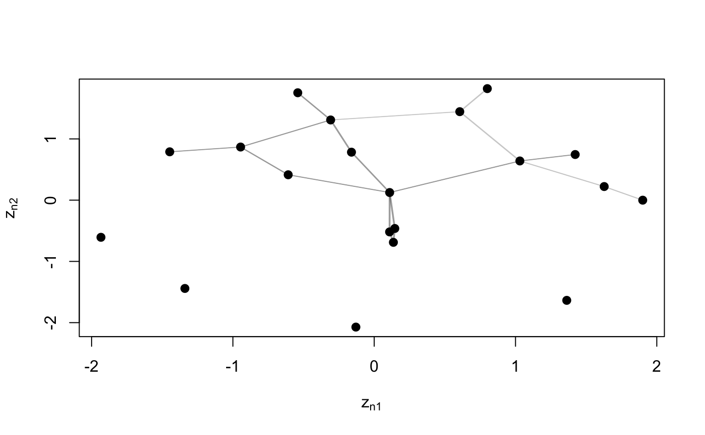

Latent space models (LSM) are a well known family of latent variable models for network data introduced by Hoff et al. (2002) under the basic assumption that each node has an unknown position in a D-dimensional Euclidean latent space: generally the smaller the distance between two nodes in the latent space, the greater the probability of them being connected. Unfortunately, the posterior distribution of the LSM cannot be computed analytically. For this reason we propose a variational inferential approach which proves to be less computationally intensive than the MCMC procedure proposed in Hoff et al. (2002) (implemented in the latentnet package) and can therefore easily handle large networks.
Salter-Townshend and Murphy (2013) applied variational methods to fit the LSM with the Euclidean distance in the VBLPCM package.
In this package, a distance model with squared Euclidean distance is used. We follow the notation of Gollini and Murphy (2016).
lsm(Y, D, sigma = 1, xi = 0, psi2 = 2, Niter = 100, Miniter = 10, tol = 0.1^2, randomZ = FALSE, nstart = 1)
| Y | ( |
|---|---|
| D | integer dimension of the latent space |
| sigma | ( |
| xi | mean of the prior distribution of \(\alpha\). Default |
| psi2 | variance of the prior distribution of \(\alpha\). Default |
| Niter | maximum number of iterations. Default |
| Miniter | minimum number of iterations. Default |
| tol | desired tolerance. Default |
| randomZ | logical; If |
| nstart | number of starts |
List containing:
lsmEZ (N x D) matrix containing the posterior means of the latent positions
lsmVZ (D x D) matrix containing the posterior variance of the latent positions
xiT mean of the posterior distribution of \(\alpha\)
psi2T variance of the posterior distribution of \(\alpha\)
Ell expected log-likelihood
Gollini, I., and Murphy, T. B. (2016), 'Joint Modelling of Multiple Network Views', Journal of Computational and Graphical Statistics, 25(1), 246-265 http://arxiv.org/abs/1301.3759.
Hoff, P., Raftery, A., and Handcock, M. (2002), "Latent Space Approaches to Social Network Analysis", Journal of the American Statistical Association, 97, 1090--1098.
### Simulate Undirected Network N <- 20 Y <- network(N, directed = FALSE)[,] modLSM <- lsm(Y, D = 2) plot(modLSM, Y)